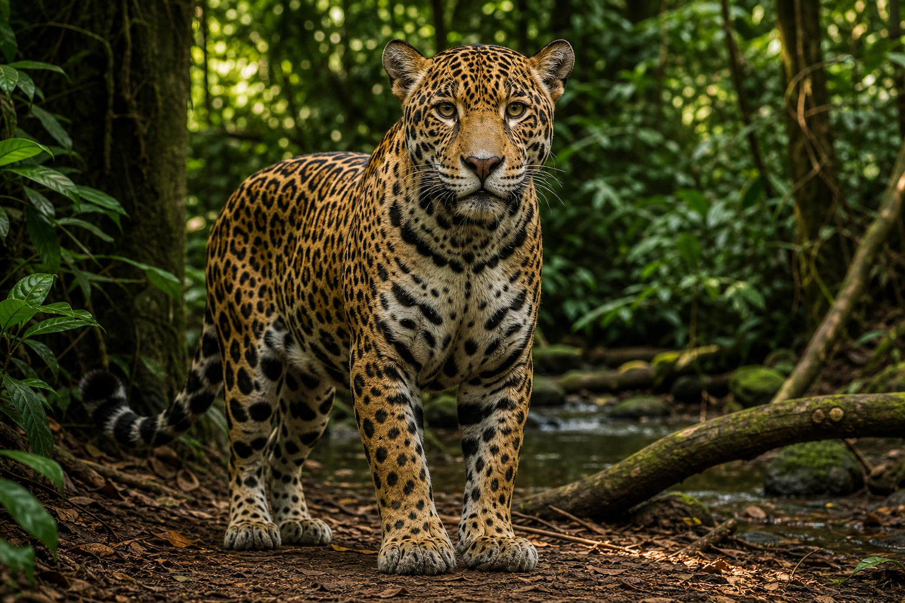

Onça-pintada
A grande guardiã do equilíbrio
A onça-pintada é o maior felino das Américas e uma predadora essencial para manter o equilíbrio da floresta. Ela controla populações de outros animais e ajuda a evitar que uma espécie domine o ambiente.
Com a caça ilegal, muitas onças são mortas por medo, retaliação, venda de partes do corpo ou conflito em áreas invadidas. Também sofrem com armadilhas, tiros, envenenamento e perda de território. Quando uma onça desaparece, todo o ecossistema ao redor sente o impacto.